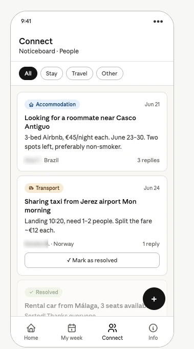
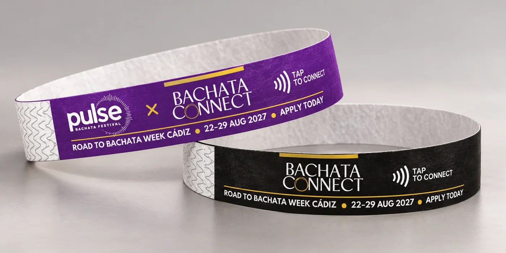
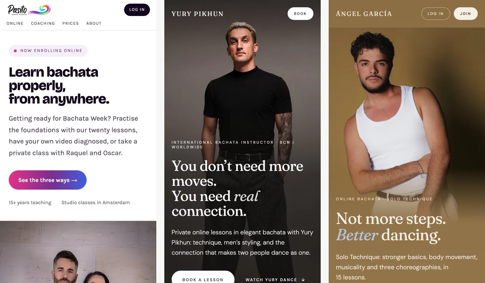

From the problem to a shipped feature, by one person
I wrote this page for the AI-native designer/builder role at ORTH. It follows the loop the role describes: find the problem, prototype it for real, test it with people, define what ships, and measure. I ran that loop on a product I designed, built and run myself, with Claude as my pair.
What I built with AI in the last few months, and what it changed.
I designed and built Bachata Connect, a multi-role platform for my festival, solo with Claude and AI coding agents: strict TypeScript, CI that blocks failing typechecks, a Playwright test harness, and Claude running in production.
It changed how the event ran. Recommended classes sold at twice the rate, and 65% of buyers added extras. NFC wristband check-in replaced a 20-minute manual registration for 344 arrivals. Only 38% of holders used the wristband, so I changed its job rather than defend it. I also tested a noticeboard with users, saw it was not used, and removed it.
See it running: a two-minute walkthrough, the full case study, and the live design system. I am happy to walk through the main codebase live.

Find it, prototype it, test it, decide what ships, read the numbers.
Find the problem, and read the data myself
The registration desk took about twenty minutes a person, and the week ran on spreadsheets, forms and WhatsApp. After the event, the feedback dashboard said 45 people had answered the survey. I knew more had. The database returns at most 1,000 rows per request, and with 2,291 answers the dashboard had silently cut off the rest. The real count was 72. Now every admin view pages through every row.
Prototype it for real
I design in the browser. Each feature starts as two or three options side by side. I pick one, write down why, and it becomes components, tests and a pull request. Claude Code writes much of the implementation, inside guardrails I set: design tokens it cannot bypass, tests it has to pass, and nothing deploys without my OK.
Design the agentic moments, not only screens
Expert feedback on dancers is written in Spanish, and most of the dancers reading it do not speak Spanish. Now each one reads their review in their own language, translated on demand, and 325 reviews cost under one euro. Claude also turns class discussions into a digest for each teaching artist.
Test with real people and kill what does not work
The first version had a noticeboard for shared rooms and lifts. After testing it with people, I removed it. The wristband was meant to be a social habit, but 38% of holders tapped someone, and taps fell from 139 on day one to 35 on day seven. So I let the band be the moment you arrive and moved finding people again to the directory, where 56 contacts were saved against 2 taps.
Define what ships
Quality is written into the build, not left to review. Every pull request runs a typecheck, Playwright drives the critical journeys, and 86 colour pairs are checked for contrast, so a failing colour cannot ship. A missing translation is a type error, not a blank button.


A design system that lives in code and stays in sync with design.
Three brands share one component library, so adding a teaching artist is a data change, not a rebuild. Colours are named by their job, and an artist can have their own palette but not an unreadable one. Figma has been a daily tool for me for years, at TSB and Amplifon. At TSB I built the design system and the team around it. Today my system lives in code, with tokens that design and engineering both use.

The design system is public: github.com/flamingointheweb/design-system-showcase.
I work in Spanish, and I like being where the users are.
- Spanish is my first language. One of my artist sites is in Spanish all the way down, and the reviews in my product are translated into each reader’s own language.
- I have worked on agriculture software. I advised a soil-sensing robotics company on the interface its farmers use and on how to test it with them.
- I get close to the people I design for. On Amplifon I spent time with hearing aid specialists and their customers, found that the brief was not an app, and redefined it. The result won six international awards.
- I would love the field time. Visiting growers is the part of the job I would look forward to most.
One person, the whole loop, and the numbers to show for it.
- I take a problem from the user to a running feature. Discovery, design, code, tests and measurement are all mine, and I can show them running.
- I use AI as my primary way of building, with guardrails. I decide what is right, and I check it.
- I have led teams and standards. Zero to 17 at TSB, with a design system and customer testing as a habit, so I can run a squad as well as build in it.
- I change my mind when the evidence says so. I cut the noticeboard and repurposed the wristband.
I would be glad to share my screen and walk you through it live.